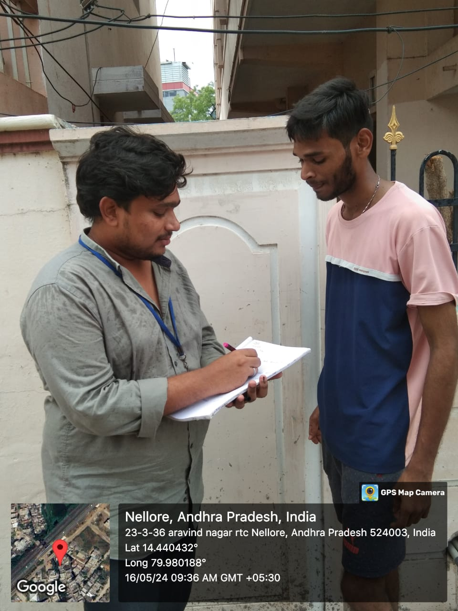
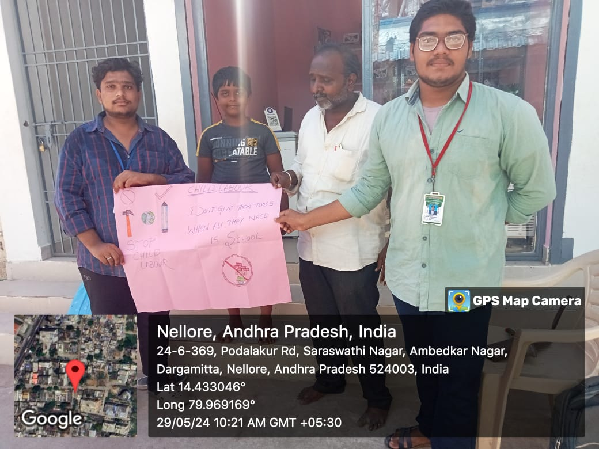
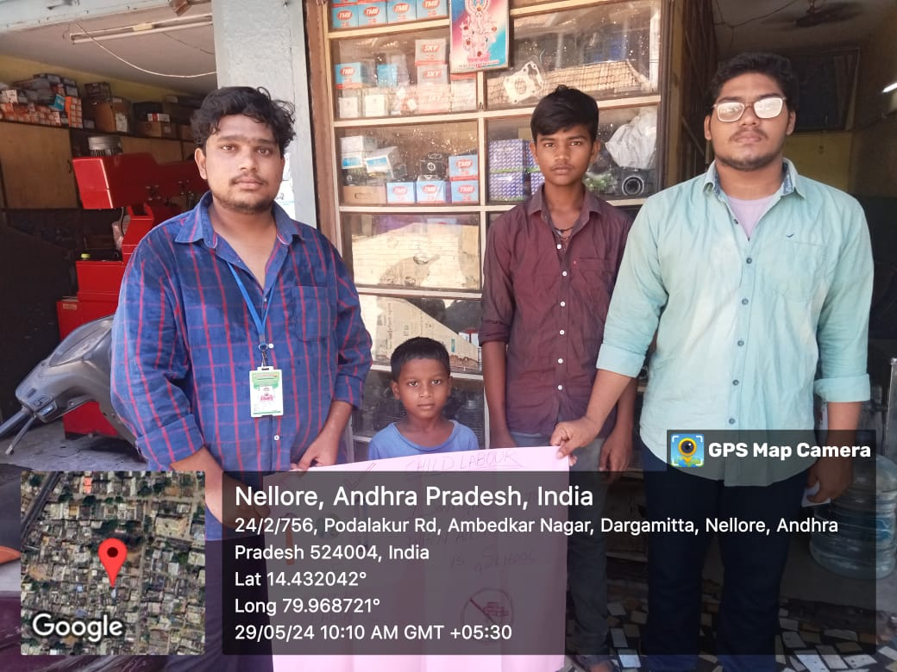

In the third week, we created awareness in children.
Day 1: In order to start my awareness program, I collected all the information from the week's survey. Many questions were raised in my mind, so I needed to clear all these things.
Day 2: We started an awareness drive on child labour. Employment of children below a certain age limit is termed as child labour, which varies from country to country. In India, the age limit for children is 14 years, and any factory or industry employing children below 14 years is illegal.
Day 3: As most of the children are seen working in mechanic shops, we started a survey to see if there are any such children in our nearby areas.
Day 4: We started to spread awareness in those shops by telling them why education is important for children.
Day 5: On the third day, I shared some slogans on child labour:
Day 6: As part of my awareness program, we made some charts about child labour and its importance. We placed them around the school to educate the children and to improve their thoughts on education.
  